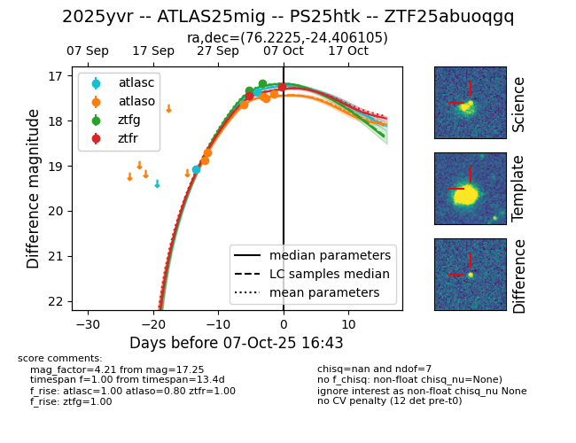
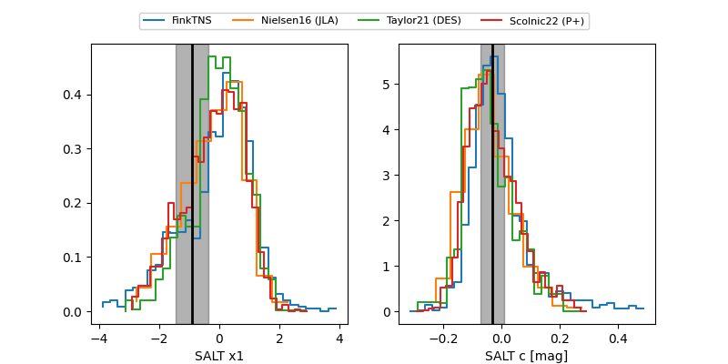

FINK: ZTF25abuoqgq
Lasair: ZTF25abuoqgq
ALeRCE: ZTF25abuoqgq
TNS: 2025yvr
YSE: 2025yvr
ZTF25abuoqgq (ztf,fink)
2025yvr (tns,yse)
ATLAS25mig (atlas)
PS25htk (panstarrs)
equatorial (ra, dec) = (76.2225,-24.40611)
galactic (l, b) = (225.5071,-33.48863)


last atlasc=17.37, atlaso=17.40, ztfg=17.17, ztfr=17.25
2 atlasc, 6 atlaso, 2 ztfg, 2 ztfr detections